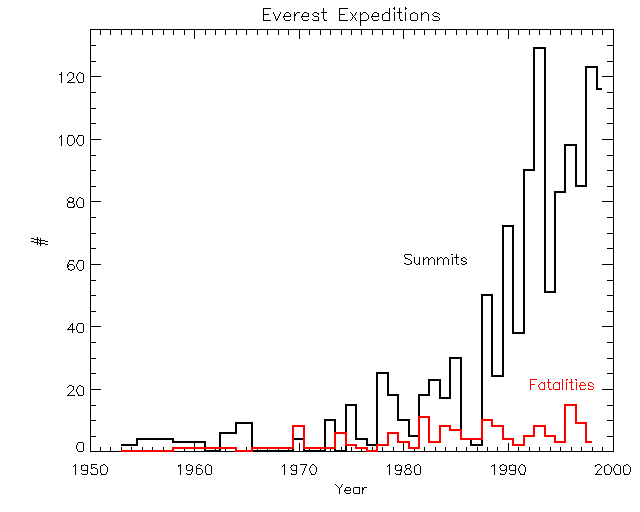
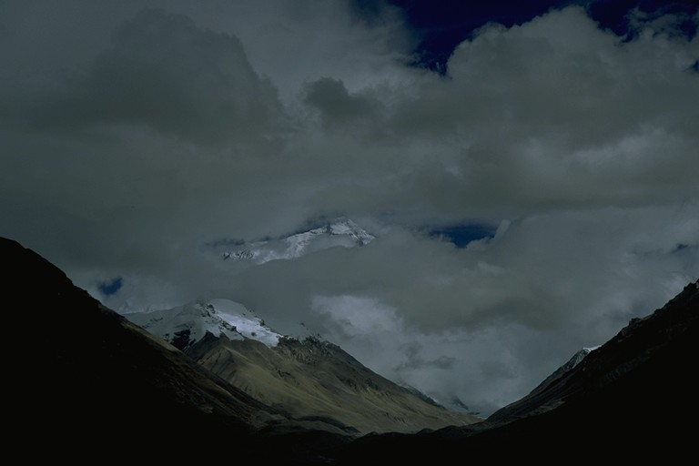
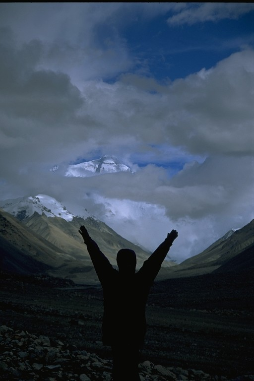
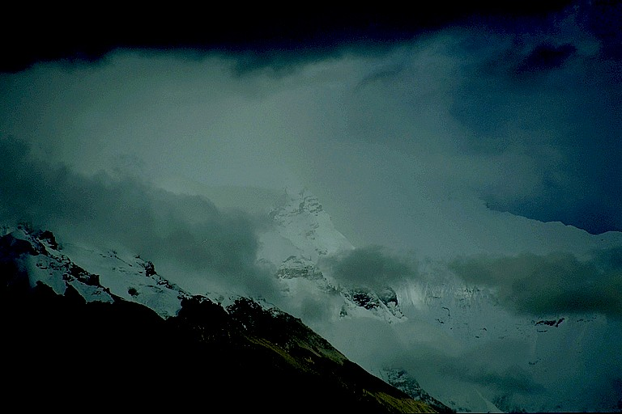

(Mount Everest) Mt. Everest/Qomolangma/Sagarmatha, as she is called by the World, Tibetans and Nepalis respectively, is at 29035' or 8850m, the highest point on the surface of the Earth and every climbers dream. There are a number of routes up the mountain with two main base camps - the North Face Base Camp which is located near the base of the Rongphu glacier, a brisk half hours walk from the Rongphu monastery and the South Face Base Camp located at the foot of the Khumbu glacier. Most recreational climbing teams go up the hill along the South-East ridge. The fatality rate relative to the number of succesful summit bids is about 4 percent based on data from the NYT mainly because of recent advancements in gear and climbing techniques. Until the end of the 70's the fatality rate was a gruesome 30 percent.
The chart below provides the historical evolution of number of successful summit bids versus the number of fatalities.
A sample of my pictures from Everest North Face Base Camp

Everest playing strip tease

Elated at getting till Base Camp. The Summit is still 12000' above

Beautiful Changtse in the foreground. Traditionally she has been an acclimatization climb for the North Face summit baggers
Click here for other fascinating factoids
The fourteen 8000+ meter peaks in the World
Picture of the Himalayas from Space
{kind=link}